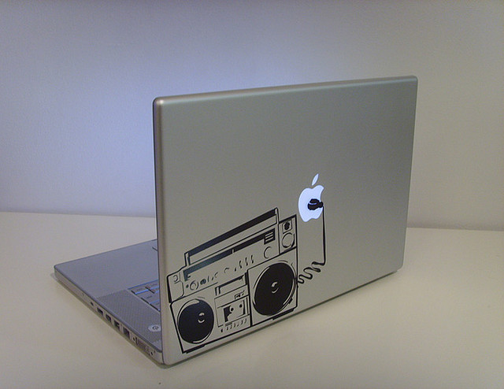
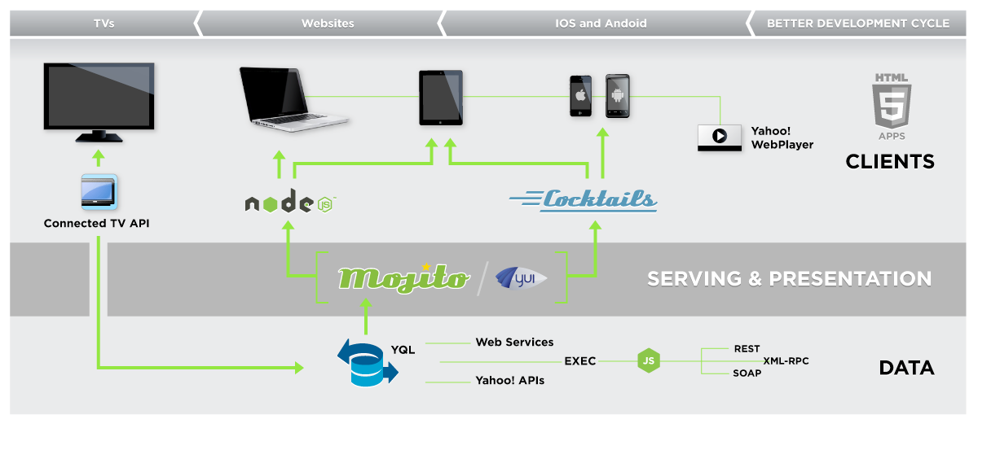

Future of Web Apps 2012 - Prague
About Me
- Howdy, I'm Derek Gathright
- Senior Software Engineer @
- @derek (Twitter & Github)
Let's talk about web dev...
Old School
You used some server-side scripting language to talk to your database via SQL and produce an HTML document that you deliver to a browser, and maybe sprinkle some DHTML & AJAX on top.
Web pages were (mostly) static, and gave consistent experiences across all browsers.
New School
- Responsive Design
- Progressive Enhancement
- Multi-device
- Connectivity variances
- Interaction capabilities
- Concurrency
- Real-time
- REST(ful) API
- JS Modules + Loader
- Dependency Resolution
- Unit Testing
- Deployment + Hosting
That's a lot of things to consider!
Proper web development is pretty hard these days if you aren't using tools, frameworks, libraries, and toolkits.
YUI is a JavaScript toolkit.
Core concepts:
- • Modular
- • Extensibility
- • Flexibility
- • Cross platform
What a YUI app looks like
<!-- Include the seed file -->
<script src="yui.js"></script>
<!-- The `YUI` object is now available and can load in any JS or CSS in the most optimal and efficient way possible. -->
<script>
// Create a YUI sandbox on your page.
YUI().use('node', 'anim', 'event', function (Y) {
// You can now manipulate DOM objects, animate movement, and use custom events
});
</script>
<script>
// Loads more than just YUI modules!
var YUI_config = {
modules: {
'jQuery': { fullpath: '/path/to/jquery.js' }
}
};
YUI().use('jQuery', function(Y) {
// $ is now available
});
</script>
By using YUI you get an asset loader, modules w/ dependency resolution, 300+ core modules, 400+ "Gallery" modules, an incredibly involved community (♥!!), and core team at Yahoo! dedicated to helping your apps be awesome.
Woot!
So you now have a foundation to build any Web application possible, including...

Because is a first-class environment for , that means it runs just as well there as it does in 
Node.js is how YUI is tested.
After every build, 7,200+ unit tests are executed, per environment.
And they all pass.
So if we have a loosely coupled JavaScript platform for servers and clients that we can build on top of, wouldn't the next step be a framework?
Yes!
Introducing...
Mojito is a JavaScript MVC framework designed to make developing mobile applications easy and efficient.
Mojito is built on top of YUI.
Adds...
- Custom modules
- Command line tools
- Hosting environment
Getting Started
// Install mojito $ npm install -g mojito // Run some unit tests to insure it installed $ mojito test
// Create an app $ mojito create app hello_world $ cd hello_world // Create a mojit $ mojito create mojit myMojit
// file: mojits/myMojit/controller.server.js
// Create the module
YUI.add('myMojit', function(Y, NAME) {
Y.namespace('mojito.controllers')[NAME] = {
index: function(action) {
action.done('Hello, world!');
}
};
});
// Fire up the server $ mojito start // View @ localhost:8666/@myMojit/index
Mojito is great for cross-platform applications.
You get a consistent JavaScript runtime on both the client and the server.
Learn more...
☛ code: https://github.com/yahoo/mojito
☛ docs: http://yhoo.it/mojdoc
Yahoo Query Language
YQL is SQL-like syntax for HTTP.
SELECT {fields}
FROM {table}
WHERE {condition}
Examples
SELECT * FROM weather.forecast WHERE location=90210
SELECT * FROM data.html.cssselect WHERE url="http://yahoo.com" AND css="body a"
SELECT * FROM google.translate WHERE q="Hello" AND target="cs";
Libraries available in most languages
In Node.js...
$ npm install -g yql
In YUI...
YUI().use('yql', function(Y) {
Y.YQL('SELECT * FROM weather.forecast WHERE location=90210', function(result) {
// Do something
});
});
What's the secret sauce? DataTables
DataTables convert YQL queries into one (or many) HTTP requests.
DataTables available for 184 web sites & services. 1,000+ tables in all.
Process data on YQL's servers. Win!
The Big Picture
Conclusion?
Go build awesome things, and use all the same tools we use.
♥'s open-source.